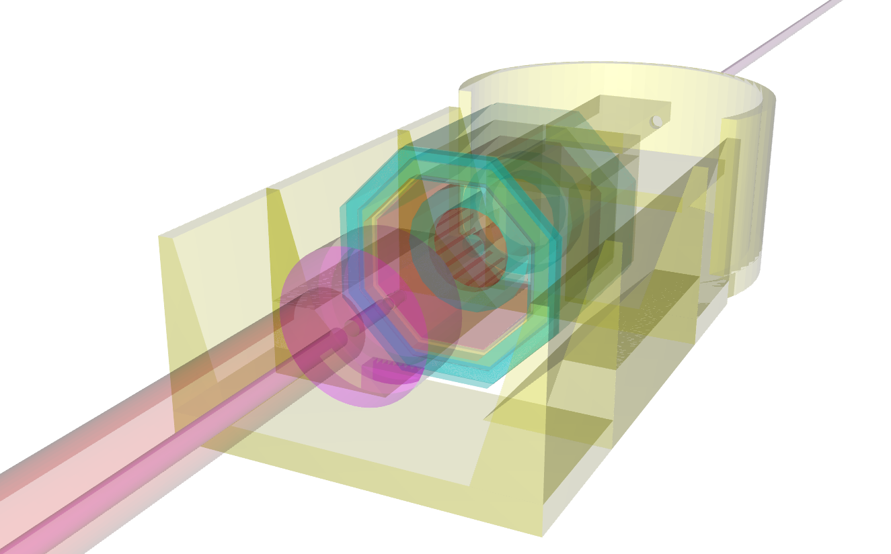

Week 1
May 8-15
Becoming familiar with JSRoot, trying out its features, and assessing the state of the project. Going over Sergey's initial email and reading through code, reading some docuementation.
Week 2
May 16-22
Testing JSRoots performance and comparing it to other WebGL applications to get an idea of what is possible. Noticed the 3D histograms could likely have their performance improved. After a few failed attempts of getting desktop ROOT to install on my mac, tried on an ubuntu machine. Trying out all the interactive features (:
Week 3, Program Start
May 23-30
First commit to get started was to make the 3 axis histogram rendering much smoother. By using BufferGeometry I reduced the number of draw calls from 1000 to just 2, removing the main bottleneck from the rendering. Now it should be possible to render a histogram with substantially more geometry on even a slower computer. I was able to preserve all of the original interactivity (highlighting, tooltips) by keeping the old meshes for the intersection tests, but disabling their actual rendering. Here are a couple screenshots comparing performance on my old computer
During this week I also set up a slack messaging group for the GSOC CERN students to get to get to know each other and talk about their projects. 10 of us are in the group.
Week 4
May 31-June 6
My finals week. Didn't have too much progress on the project other than browsing some code.
Week 5
June 7-13
Got a rough initial implementation of large geometry trimming. The method baiscally works by calculating the bounding volume of each piece, as well as its minimum bounding dimension, and marking that piece invisible if it is below a minimum theshold volume and smallest dimension. This way especially thin or narrow parts will cut out. A better version of this will be to set the threshold for a target number of volumes, rather than the current threshold tuned to the alice geometry. Here is an image with the cutoff set rather high, not showing too much detail
During this week I migrated to a new machine, a PC that is much faster than my old one. Days of installing software and the lot :p but running much quicker now. This week was also when I started to notice big issues with transparency and z-buffer artifacts. I did a lot of experimenting with disbling the depthWrite and depthTest material options, as well as various levels of transparency and camera clipping planes. Disabling the depth test may be a good option for high transparency, but is not a complete solution.
Week 6
June 14-20
Here I began trying out threejs's new clipping features. The modular javaascript framework is relatively new to me, but I figure out how to load in and use new modules. I was able to implement a rough interactive cutting and transparency adjustment feature using dat.gui.
This week I was looking at some webgl demos and saw some very nice looking ambient occulusion code. I thought it would be cool if it could be used to see more detail on jsroot's models, and I was actually abe to get it to work! The code didn't need too much adjusting, and it seems to make more subtle features in the geometry visible compared to basic shading.

Week 7
June 21-27